Tecnologia
Qual a relação entre tecnologia e saúde mental?
Nessa busca por equilíbrio, não podemos esquecer de quem é jovem demais para tomar decisões sozinhos. É importante que os pais e responsáveis estejam alertas nessa questão e que haja diálogo entre jovens e adultos. A família tem papel fundamental na construção de uma boa vivência nos meios digitais e ficar atento aos sinais que podem ser demonstrados no comportamento dos adolescentes. Talvez seu filho esteja passando tempo demais na internet e isso esteja prejudicando o sono e consequentemente, o desempenho escolar e de outras atividades. Pode haver também episódios de bullying que afetam diretamente a saúde mental. E pode ser que precise de um auxílio profissional para avaliar melhor a situação. E para te ajudar a entender um pouco mais sobre saúde mental, separamos algumas dicas de vídeos.
A busca pelo equilíbrio
É possível que a tecnologia auxilie na promoção da melhora na saúde mental, onde você pode procurar atendimento psicológico on-line, por exemplo. Essa ferramenta é muito importante para aqueles que por um motivo ou outro não conseguem ir presencialmente ao consultório. Além disso, existem muitos profissionais que disponibilizam de graça conteúdos de qualidade e que podem ajudar no dia a dia. Mas lembre-se de seguir pessoas qualificadas para o assunto, formado na área e, sempre que possível, confira as referências. Fique atento as Fakes News, Existem também aplicativos que podem te ajudar com exercícios para controlar aspectos como ansiedade e estresse. Você pode fazer meditação, ouvir músicas relaxantes, enfim, muita coisa que pode trazer melhorias no seu dia a dia.
